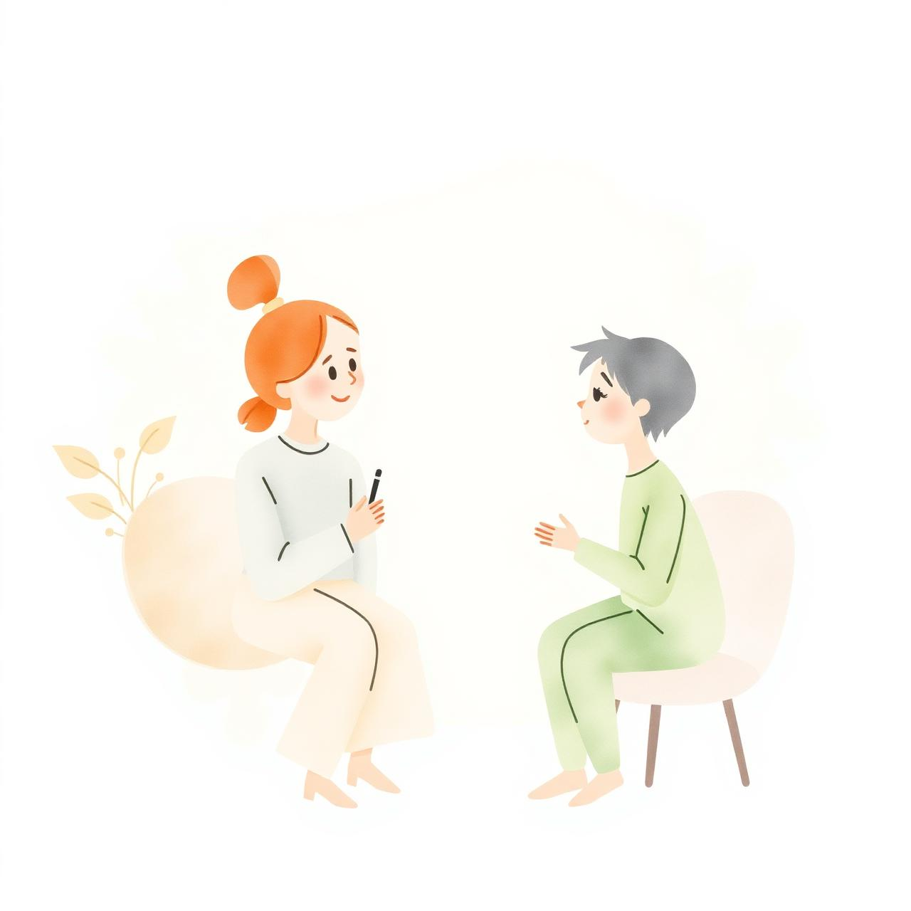

Логопед-дефектолог в Алматы
Ирина Примина
40 лет помогаю детям и взрослым говорить свободно, чисто и уверенно. Индивидуальный подход к каждому.
40
лет опыта
1000+
учеников
100%
индивидуально

О специалисте
За 40 лет практики Ирина Примина помогла сотням детей и взрослых преодолеть речевые трудности. Каждое занятие — это внимание, тепло и профессиональная методика, выстроенная под конкретного ученика.
Направления работы
С чем приходят и в чём я помогаю
Постановка звуков
Коррекция звукопроизношения у детей и взрослых.
Развитие речи
Запуск речи у неговорящих малышей, расширение словаря.
Дислалия и дизартрия
Работа с нарушениями речи различной этиологии.
Заикание
Бережная работа с темпом и плавностью речи.
Записаться на приём
Позвоните, чтобы обсудить ситуацию и выбрать удобное время. Первая консультация — знакомство и оценка речи.
Телефон
+7 777 705 6458
Адрес
г. Алматы,
ул. Джангельдина, д.1, кв. 34
ул. Джангельдина, д.1, кв. 34